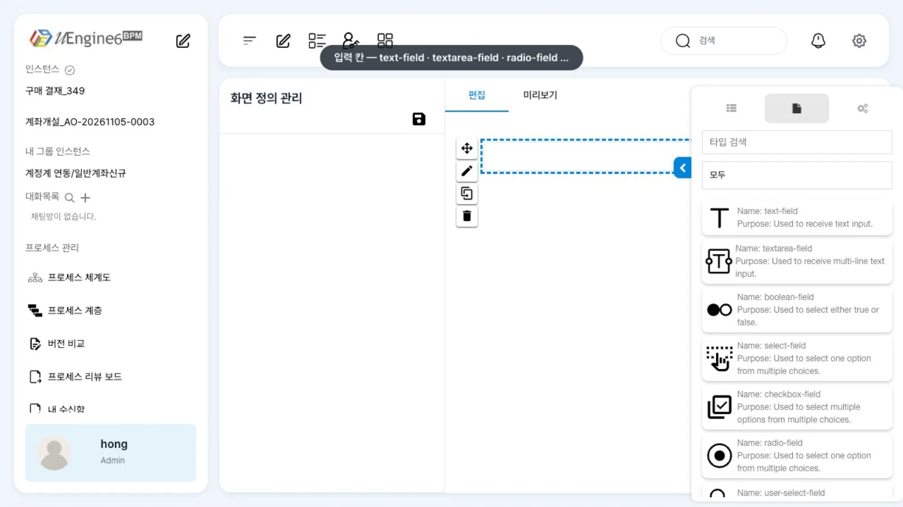
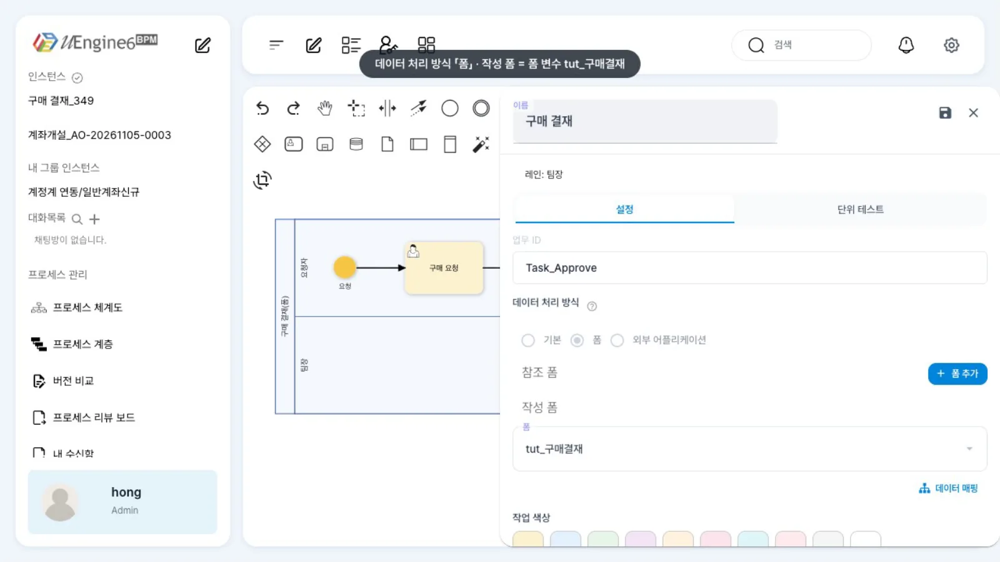
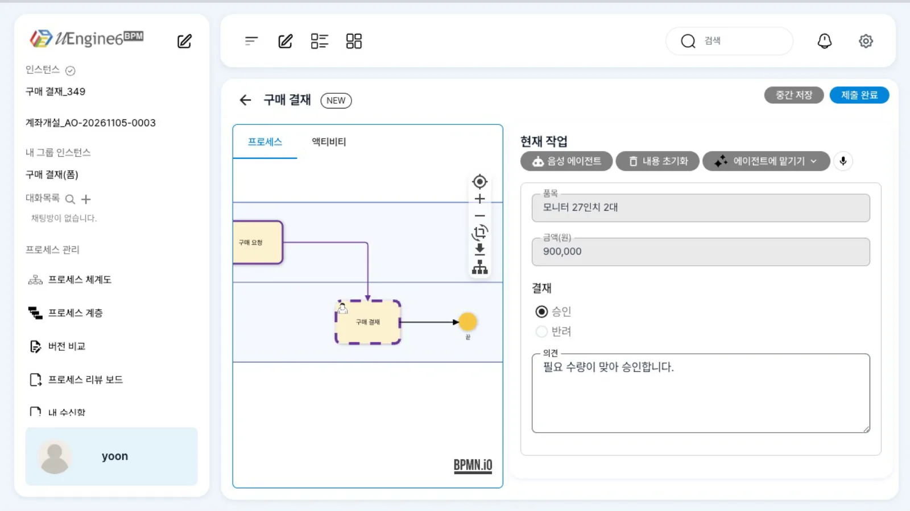
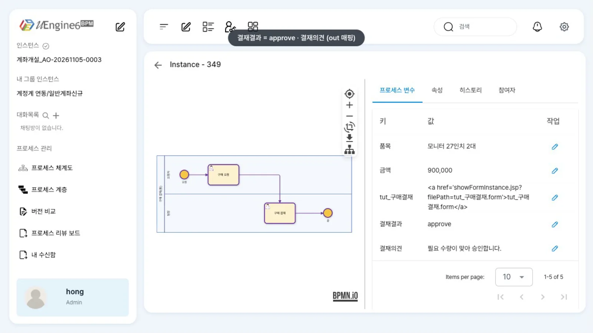

작업에 입력 칸 몇 개로는 부족하면 폼을 붙입니다. 폼은 정의 폴더의
.form파일(HTML)입니다. 작업은 폼 변수로 폼을 사용합니다. 매핑으로 값을 미리 채우고(in) 결과를 변수로 받습니다(out).
무엇을 · 왜#
작업 입력값과 데이터 매핑의 아규먼트는 칸을 위에서 아래로 나열합니다. 읽기 전용 칸, 라디오 버튼, 여러 줄 입력이나 화면 배치가 필요하면 폼을 씁니다. Camunda의 사용자 작업 폼(form key + Form-JS 스키마)과 같은 역할을 합니다.
uEngine6에서 폼은 네 요소로 구성됩니다.
| 요소 | 위치 | 예제 값 |
|---|---|---|
| 폼 파일 | definitions/<폼 id>.form (정의 루트) |
tut_구매결재.form |
| 폼 변수 | 프로세스 변수, 타입 Form, 기본값 HtmlFormContext |
이름 tut_구매결재, formDefId: "tut_구매결재" |
| 폼 작업 | 사람 작업 _type: org.uengine.kernel.FormActivity |
tool: "formHandler:tut_구매결재", variableForHtmlFormContext.name: "tut_구매결재" |
| 매핑 | 작업의 eventSynchronization.mappingContext |
in: 변수 → tut_구매결재.<칸>, out: [Arguments].<칸> → 변수 |
업무 화면은 폼 id와 같은 이름의 변수로 폼 값을 읽고 씁니다. 그 이름이 변수 조회 URL 경로에 그대로 들어가므로 폼 id에 /를 쓰지 않고, 폼 파일은 폴더 없이 정의 루트에 둡니다.
이 장의 예제
프로세스 튜토리얼/폼/구매결재 — 최구매 「구매 요청」(아규먼트 품목·금액 → 변수) → 윤팀장 「구매 결재」(폼 tut_구매결재).
폼에는 읽기 전용 「품목」「금액(원)」, 라디오 「결재」(승인/반려), 여러 줄 「의견」이 있습니다. 결재 결과는 변수 결재결과·결재의견으로 받습니다.
따라 하기#
- 화면 정의 편집기. 홍길동으로 왼쪽 메뉴의 새 화면 정의(
/ui-definitions/chat)를 엽니다. 「화면 정의 관리」, 「편집」「미리보기」 탭, 오른쪽에 레이아웃 목록(「1 column」 …)이 있습니다. 「1 column」을 가운데로 끌어 놓으면 레이아웃이 추가됩니다.
화면 정의 편집기 - 입력 칸 목록. 오른쪽 위 문서 아이콘(Components)을 누르면
text-field,textarea-field,boolean-field,select-field,checkbox-field,radio-field,user-select-field,file-field… 이 나옵니다. 이 브랜치에서는 끌어 놓은 입력 칸이 그려지지 않아(알려진 제약), 이 장에서는 같은 구성의 폼 파일을 미리 만들어 씁니다(아래 「설정 레퍼런스」). - 작업에 붙은 폼.
튜토리얼/폼/구매결재를 열고 연필 아이콘을 누른 뒤 「구매 결재」를 더블클릭합니다. 「데이터 처리 방식」이 「폼」, 「참조 폼」은 비어 있고(「+ 폼 추가」), 「작성 폼」에 폼 변수tut_구매결재가 설정되어 있습니다.
폼 작업 패널 - 매핑 보기. 「데이터 매핑」을 누르면 「구매 결재 매퍼」가 열립니다. 트리가 접혀 있어 선은 한 줄로만 보이므로, 매핑 내용은 아래 「설정 레퍼런스」의 JSON으로 보는 편이 정확합니다. 확인했으면 저장하지 않고 닫고, 자물쇠 아이콘으로 편집 잠금을 풉니다.
- 폼으로 결재. 최구매가 「구매 요청」을 제출해 두었습니다(품목
모니터 27인치 2대, 금액900,000). 윤팀장(yoon)이 업무 목록에서 「구매 결재」를 열면 폼의 「품목」「금액(원)」이 미리 채워져 있습니다. 「승인」을 고르고 「의견」에필요 수량이 맞아 승인합니다.를 적어 「제출 완료」를 누릅니다.
미리 채운 폼 - 결과 확인. 관리자 화면
/admin/<인스턴스 번호>의 「프로세스 변수」 탭에서결재결과 = approve,결재의견 = 필요 수량이 맞아 승인합니다.를 확인합니다. 폼 변수tut_구매결재의 값은 폼 파일을 가리키는 링크로 보입니다. 다음 게이트웨이는결재결과로 진행 경로를 정할 수 있습니다(조건으로 갈라지기).
결재 결과 변수
설정 레퍼런스#
폼 파일 definitions/tut_구매결재.form#
화면 정의 편집기가 저장하는 것과 같은 형식의 HTML입니다. name이 칸 이름(매핑에서 쓰는 이름), alias가 화면에 보이는 이름입니다.
<section>
<row-layout name="" alias="" is_multidata_mode="false" v-model="formValues" v-slot="slotProps">
<div class="row"><div class="col-sm-12">
<text-field name="item" alias="품목" disabled="true" v-model="slotProps.modelValue['item']"></text-field>
<text-field name="amount" alias="금액(원)" disabled="true" v-model="slotProps.modelValue['amount']"></text-field>
<radio-field name="decision" alias="결재" disabled="false" items="[{'approve':'승인'},{'reject':'반려'}]"
is_dynamic_load="false" v-model="slotProps.modelValue['decision']"></radio-field>
<textarea-field name="comment" alias="의견" rows="4" disabled="false" v-model="slotProps.modelValue['comment']"></textarea-field>
</div></div>
</row-layout>
</section>
| 컴포넌트 | 쓰임 | 주요 속성 |
|---|---|---|
text-field |
한 줄 글 | name, alias, disabled |
textarea-field |
여러 줄 글 | rows |
radio-field · select-field |
하나 고르기 | items="[{'값':'보이는 글'}, …]" |
checkbox-field |
여러 개 고르기 | items |
boolean-field |
참/거짓 | — |
user-select-field · file-field |
사용자 고르기 · 파일 올리기 | — |
정의(발췌)#
<uengine:variable name="품목" type="Text">…</uengine:variable>
<uengine:variable name="금액" type="Text">…</uengine:variable> <!-- 폼에 보일 값은 글자로 -->
<uengine:variable name="결재결과" type="Text">…</uengine:variable>
<uengine:variable name="결재의견" type="Text">…</uengine:variable>
<uengine:variable name="tut_구매결재" type="Form"><uengine:json>{"defaultValue":{"_type":"org.uengine.contexts.HtmlFormContext","formDefId":"tut_구매결재","filePath":"tut_구매결재.form"}}</uengine:json></uengine:variable>
「구매 결재」 작업의 속성 JSON입니다.
{"_type": "org.uengine.kernel.FormActivity", "role": "팀장",
"tool": "formHandler:tut_구매결재",
"variableForHtmlFormContext": {"name": "tut_구매결재"},
"eventSynchronization": {"eventType": "", "attributes": [], "mappingContext": {"mappingElements": [
{"argument": {"text": "tut_구매결재.item"}, "direction": "in", "variable": {"name": "품목"}},
{"argument": {"text": "tut_구매결재.amount"}, "direction": "in", "variable": {"name": "금액"}},
{"argument": {"text": "결재결과"}, "direction": "out", "variable": {"name": "[Arguments].decision"}},
{"argument": {"text": "결재의견"}, "direction": "out", "variable": {"name": "[Arguments].comment"}}]}}}
tool을 적지 않으면 업무 화면이 폼 id를<정의>_<활동>_form으로 짐작해 폼을 찾지 못합니다.- 패널의 「작성 폼」은 이 작업이 쓰는 폼 변수(
variableForHtmlFormContext)이고, 「참조 폼」은 앞 단계의 폼을 읽기만 할 때 추가합니다. 이 예제는 작성 폼 하나만 쓰고, 미리 채우기와 결과 받기는 매핑으로 합니다.
알려진 제약#
이 브랜치에서 확인한 것
- 화면 정의 편집기에 끌어 놓은 입력 칸이 그려지지 않습니다. 레이아웃은 추가되지만
text-field등은 빈 상자로 남습니다. 이미 있는 폼(/ui-definitions/<폼 id>)을 열어도 빈 화면입니다(파일은 읽어 오지만 화면에 표시하지 못합니다). 폼은 위의 HTML을 파일로 쓰세요. 업무 화면은 그 파일을 정상적으로 표시합니다. - 사용자 작업 패널에서 「폼」을 고를 때 뜨는 「폼 생성을 하시겠습니까?」에 「예」를 누르면 아무 일도 일어나지 않습니다. 「아니오」를 누르고 이미 있는 폼 변수를 고르세요.
- 폼 id(=폼 변수 이름)에
/를 쓰면 업무 화면이 값을 읽고 쓰지 못합니다. - 폼의
text-field는 숫자(Number) 변수를 미리 채우지 못하고 빈 칸으로 둡니다. 이 장의 첫 녹화에서 금액 칸이 비었습니다. 화면에 보일 값은 글자(Text) 변수로 두세요. ERP 예제가 금액을 숫자amountTotal(게이트웨이용)과 글자amountText(폼 표시용)로 따로 보내는 것도 이 때문입니다. - 결과를 받을 변수 이름은 폼 칸 이름과 다르게 지으세요(예제: 칸
decision→ 변수결재결과). 같은 이름의 프로세스 변수가 있으면 매핑보다 그 변수가 우선합니다.
확인 문제#
폼 파일을 `definitions/구매/결재.form`에 두고 폼 id를 `구매/결재`로 지었습니다. 어떤 문제가 생기나요?
업무 화면이 폼 id와 같은 이름의 변수로 값을 읽고 쓰는데, 그 이름이 URL 경로에 들어가 /에서 끊깁니다. 폼 파일은 정의 루트에 두고 id에 /를 쓰지 마세요.
결재 폼의 「품목」 칸을 변수 `품목`으로 미리 채우는 매핑 요소는 무엇인가요?
{"argument":{"text":"tut_구매결재.item"},"direction":"in","variable":{"name":"품목"}}입니다. 받는 쪽이 폼 칸(<폼 변수>.<칸 name>), 주는 쪽이 변수입니다.
폼 작업의 속성에 `tool`을 빠뜨리면 어떻게 되나요?
업무 화면이 폼 id를 <정의>_<활동>_form으로 짐작해 없는 폼을 찾습니다. tool: "formHandler:<폼 id>"를 적으세요.